Дипломна робота
Проскурякова Ростислава
Тема: Веб середовище для чисельного моделювання на базі Методу скінченних елементів
Метод скінченних елементів відноситься до методів розв'язання діференційних рівнянь. МСЕ є окремомим випадком методу Гальоркіна. Суть методу полягає в наступному: отримана область V ділиться на скінченну кількість підобластей Vi, i=1..n, які називаються скінченними елементами. Для вирішення задачі застосовується тріангуляція області V, в результаті чого область розбивається на n трикутників Vi. Відповідно до чисельних методів, рішення шукається у вигляді 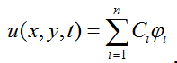, де φi базисні функції, а Ci - коефіцієнти, апроксимуючі шукану функцію базисними.
Об'єкт полотно дозволяє робити кожну графіку на вашому додатку по справжньому інтерактивною
Локальне сховище дозволяє зберігати потрібні результати безпосередьно на стороні клієнта, що у деяких випадках дозволяє обійтись без бази даних
Завдяки багатопоточності з'являється засіб распаралелювання процесів, що прискорює обчислення
Підтримка аудіо та відео дозволяе значно збільшити наочність присутньої інформації

Головною проблемою чисельного рішення диференціальних рівнянь є вибір апроксимації функцій. МСЕ пропонує вибирати так звані базисні функції-форми, після чого передбачуване рішення буде лінійною комбінацією даних функцій. У даному випадку будуть використовуватися лінійні функції-форми.
Апроксимація шуканих функцій буде проводитися за допомогою зважених нев'язок.
В першу чергу вводиться нев'язка апроксимації:
 (1)
(1)
Де u - точне рішення параболічного рівняння, ū - наближене рішення. Щоб зменшити дану невязку, вимагатимемо рівності нулю інтеграла по області V від похибки R помноженої на вагові функції:
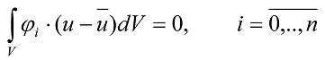 (2)Зауважимо, що в загальному випадку рівняння має вигляд:
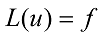 (3)Якщо крайові умови представити у вигляді:
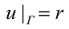 (4)Де Г-границя області. Тоді до нев'язки рівняння додається невязка на границі:
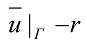 (5)Тепер, аналогічно (2) мінімізуємо суму нев'язок на границі і в області:
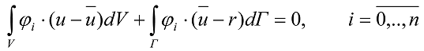 (6)Підставляючи загальний вигляд розв'язку в (6) маємо систему лінійних алгебраїчних рівнянь відносно Сi, i=1..n.
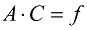Після рішення даної системи ми можемо обчислити значення шуканої функції в будь-якій точці області V.
Для вирішення даної системи необхідно також вибрати конкретний вид функцій форми
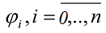Також, варто зауважити, що ми намагаємося апроксимувати диференціальне рівняння другого порядку лінійними скінченними елементами. Водночас, порядок скінченних елементів не може бути менше порядку старшої похідної рівняння (6). Однак, можна послабити цю вимогу, перевівши рівняння в слабку (варіаційну) форму. Продемонструємо це на довільному інтегралі по скінченному елементу Vi, який розглянемо тільки біля другої похідної:
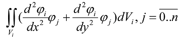 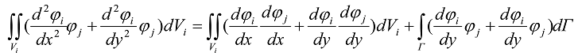 (7)Другий доданок (7) завжди рывен нулю, бо базисні функції на границі завжди обертаюсться в нуль.
Зауважимо також, що в випадку нестаціонарного рівняння та початкових умов розв'язок рівняння шукається в наступному виді:
 (8)
(8)
Із тих же міркувань що і раніше, отримуємо систему диференціальних рівнянь:
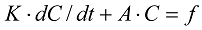(9)Ця система розв'язується за допомогою різницевої схеми Кранка-Ніколсона.